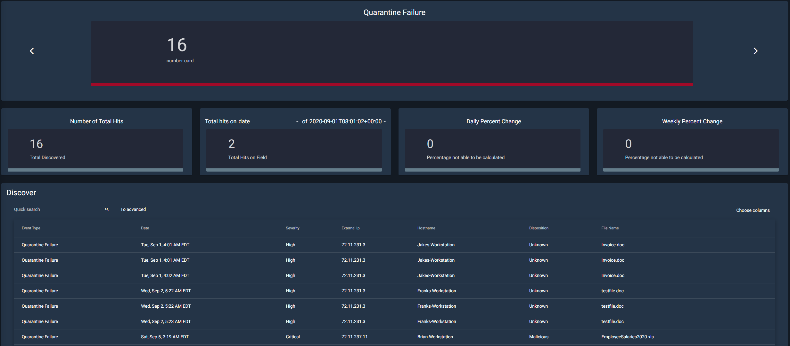
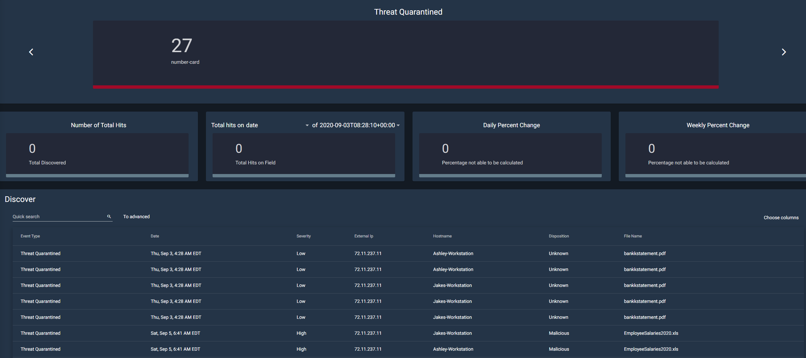
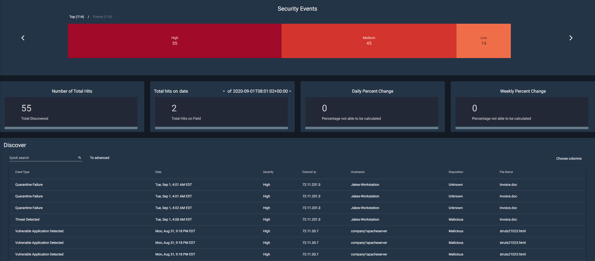
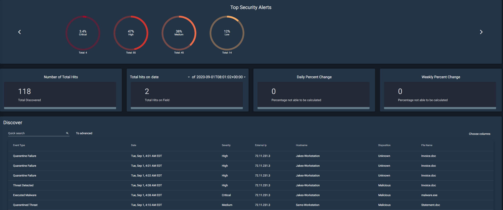

Security Events
Table of contents
Under the home screen of the Security Events tab, one can find multiple widgets available to assist users in monitoring security events on the network. The widgets consist of: Quarantine Failure, Threat Quarantined, Vulnerable Application Detected, Cloud IOC, Security Events, Top Security Alerts, Top Users Triggering AV Alerts, DNS Trends (Cisco Umbrella), and Antivirus Events Over Time (Cisco AMP). The home screen offers a quick visual for administrators to monitor events quickly through the efficient use of graphs to break down specifics such as Top Security Alerts.

There are currently 9 different widgets available when you open security events from the dashboard. Each one works similarly to the other; in that, you have the option to “Choose Timeframes” and “Discover.”
The choose timeframes option allows you to choose between 14 different intervals. These intervals will determine the timeframe of the data that the infographic will show. For example, if you have it set to a half-hour, the infographic will only show data that was gathered in the last half-hour. It is also worth noting that the currently selected option is highlighted in blue.

The Discover option is a bit more complex. Choosing this option will take you to a new page with more information about the widget as shown below. This page will show you the corresponding infographic as well as the total number of hits for that category. In this example, there were 55 total discovered security events.
Quarantine Failure
This widget is responsible for centralizing all known data related to quarantine failures occurring on workstations across the network. Quarantining is when a file that was supposed to be temporarily neutralized to protect the system. When this quarantine fails, it can potentially put the system at risk.

Threat Quarantined
This section deals with files that have been successfully quarantined. This section can be used to deal with the threats within these files and potentially release them from quarantine.

Vulnerable Application Detected
This section tracks applications and categorizes them if they are deemed vulnerable. Vulnerable applications are any programs that contain backdoors or other exploitable loopholes that could be used to access or disrupt the system.

The Security Events
The security events tab contains a lot of important information. A security event can be described as unusual activity that could potentially cause harm or unintended access to a system. This page aggregates the data from these activities and categorizes them by how much of a threat they are (high, medium, or low).

Top Security Alerts
Similar to the Security Events widget, the Top Security Alerts widget categorizes the events by severity: Low, Medium, High, and Critical.

Top Users Triggering AV Alerts
This widget is used for tracking which user account or system is responsible for triggering the antivirus alerts. The information from this section can be used to decide whether or not employees need more training, or even if there is a risk of an insider threat.
Antivirus Events Over Time (Cisco AMP)
This is a fairly simple section. It aggregates the information from every type of antivirus event. This includes events listed above such as a quarantine failure, threat detected, malware executed, etc.